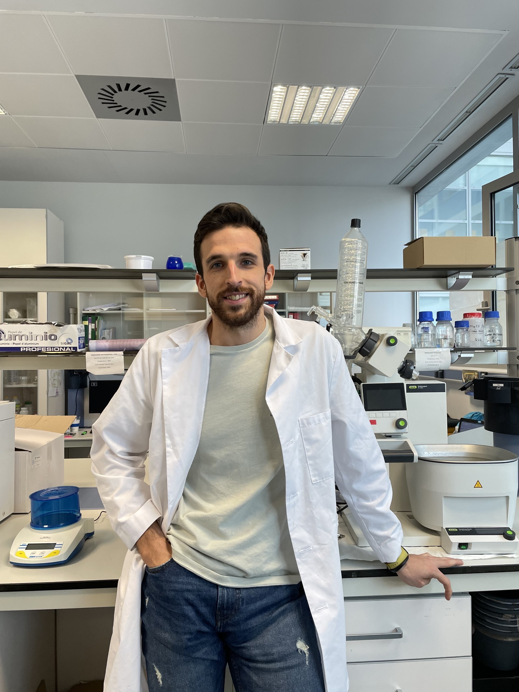
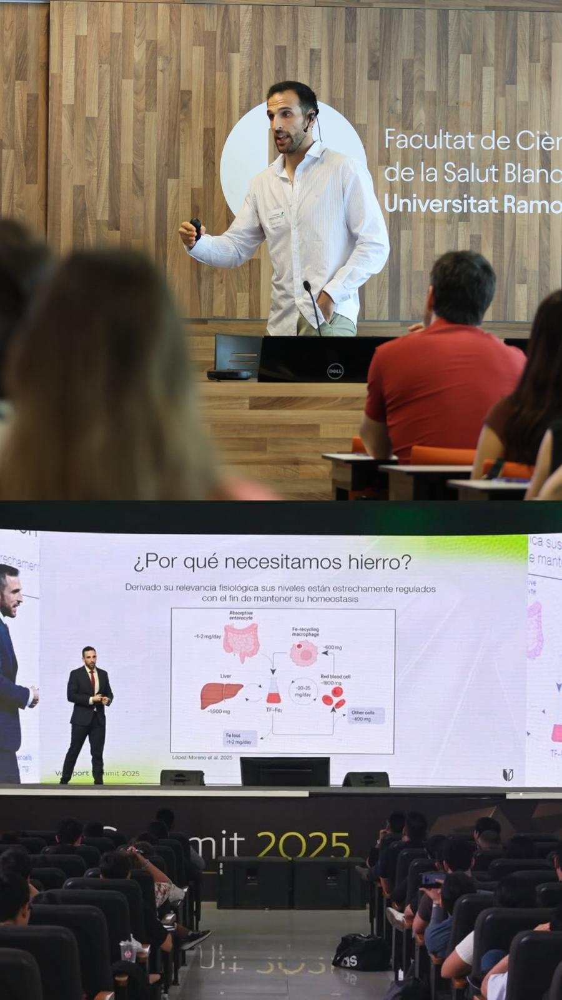

01 / INVESTIGACIÓN
Preguntar mejor
Estudiar cómo la alimentación se relaciona con la salud, el rendimiento y la sostenibilidad, intentando mantener el contexto cuando la evidencia llega a conclusiones complejas.
Compagino investigación, docencia y divulgación porque las tres forman parte de una misma manera de entender la nutrición: preguntar, estudiar y compartir lo que sabemos —y también lo que todavía no sabemos.

Mi trayectoria investigadora se ha desarrollado principalmente en el ámbito de la nutrición y la salud metabólica. Con el tiempo, ese trabajo me ha llevado a centrarme en una pregunta que atraviesa buena parte de mi investigación: cómo los patrones dietéticos saludables y sostenibles pueden influir en la salud cardiometabólica, el rendimiento y la salud planetaria.
La universidad ha sido el lugar desde el que he construido esa mirada. La investigación y la docencia han marcado buena parte de mi recorrido y hoy dirijo el grupo Dieta, Salud Planetaria y Rendimiento en la Universidad Francisco de Vitoria. Soy Doctor en Ciencias de la Alimentación por el CSIC-UAM, Cum Laude, y estoy acreditado como Contratado Doctor.
Además de la investigación, una parte importante de mi actividad está ligada a la formación. Soy codirector del Máster de Formación Permanente en Alimentación Plant-Based: Nutrición, industria y sostenibilidad de la Universidad Pontificia de Salamanca , donde participo en la formación especializada en nutrición, dietas basadas en plantas, industria alimentaria y sostenibilidad.
De ahí nace también mi faceta de divulgación. Participo de forma continuada en congresos, jornadas, encuentros científicos y actividades de formación, intentando llevar la investigación a espacios donde pueda ser útil para profesionales, estudiantes y público general.
También desarrollo parte de mi actividad docente y divulgativa junto a Fit Generation , participando en formación especializada y en la transferencia de conocimiento en nutrición y dietética.
Y ese mismo recorrido está detrás de Comer mentiras: un libro que nace de años leyendo estudios, discutiendo resultados y viendo cómo una evidencia compleja puede acabar convertida en un titular demasiado sencillo. La intención no es enseñar al lector qué debe pensar sobre cada alimento, sino darle herramientas para pensar mejor sobre nutrición.
Estudiar cómo la alimentación se relaciona con la salud, el rendimiento y la sostenibilidad, intentando mantener el contexto cuando la evidencia llega a conclusiones complejas.
Llevar esa evidencia al aula y formar a profesionales capaces de interpretar estudios, valorar incertidumbre y tomar decisiones informadas.
Hacer comprensible la ciencia sin eliminar aquello que la hace científica: el contexto, las limitaciones y la incertidumbre.

La divulgación, para mí, no es simplificar la ciencia: es hacerla comprensible sin quitarle el contexto.